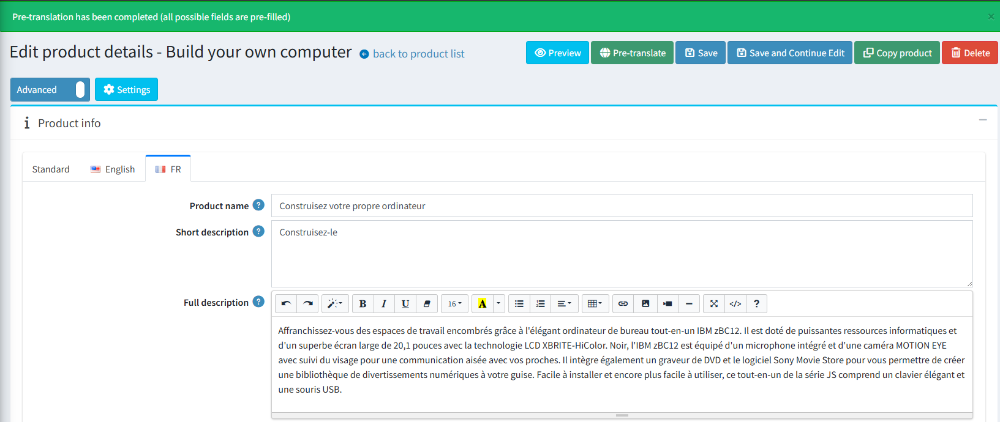

Automated Content Translation
Overview
This feature integrates automated translation capabilities into the core application, allowing store administrators to translate website content into multiple languages using two of the most popular machine translation platforms: DeepL and Google Translate.
Currently, automated translation is supported for the following entities:
- Category
- Manufacturer
- Product
- Product Attribute
- Specification Attribute
Configuration
All settings for this feature are located on the General settings page within the Translation section.

Key configuration options include:
- Allow to pre-translate: A master switch to turn the entire translation functionality on or off.
- Translate from the language: In the "standard" tab, you can specify the default language from which all translations will be generated.
- Languages to ignore: A list of languages that should be excluded from the automated translation process.
- Translation service: A dropdown menu to select the translation service to use (DeepL or Google Translate).
- DeepL: Requires an Auth key.
- Google Translate: Requires an API key.
Note
The system will not automatically translate a field that already contains a manually saved value.
How to Use
Once the feature is enabled, using it is very straightforward. A new button will appear in the main button container on the edit pages for all supported entities. For example, on the product edit page, it looks like this:

Click the "Pre-translate" button.
If the translation is successful, a confirmation message will appear. The localized fields for other languages will be populated with the translated text.

If an error occurs during the translation process, a warning message will be displayed.

Warning
It is important to note that this function acts as a pre-translation tool. The translated content is populated in the fields but is not saved automatically. This gives the user full control to review, edit, or discard the translations before manually saving the changes.